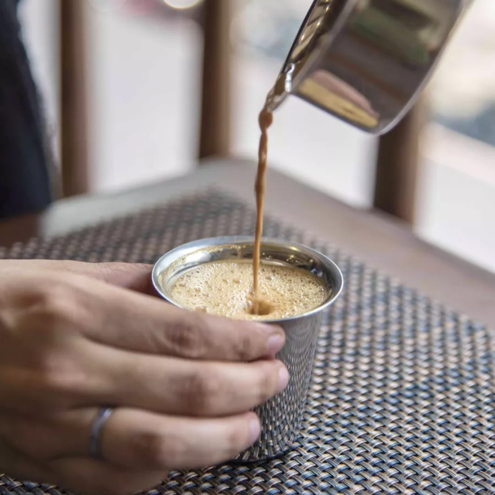
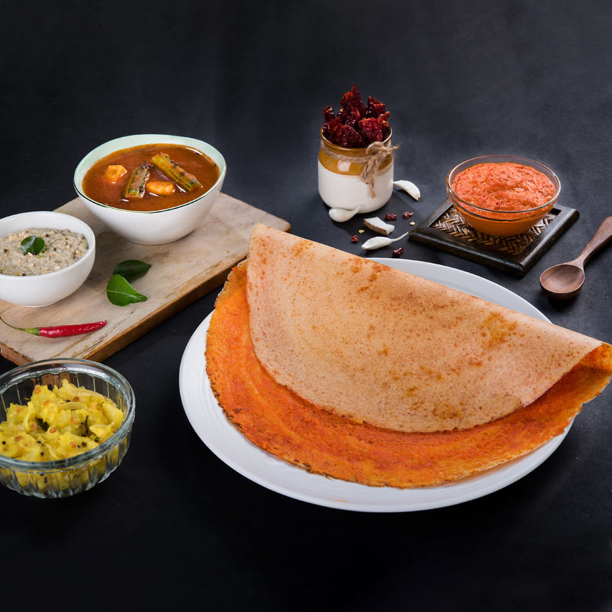
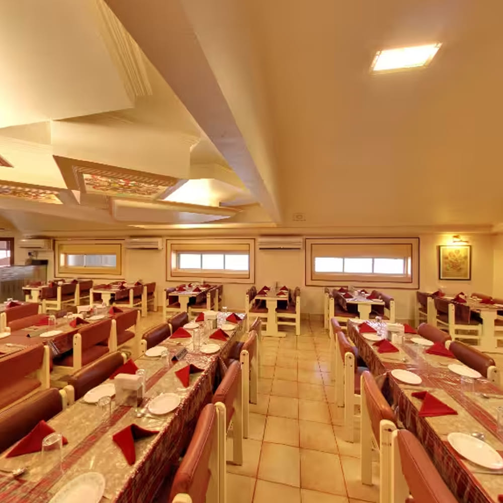

Famous Food & Restaurants in Pune
Pune is a paradise for food lovers, offering a wide variety of cuisines ranging from traditional Maharashtrian dishes
to modern multi-cuisine restaurants. The city is especially famous for its street food, South Indian breakfast spots,
and iconic eateries that have been serving delicious food for decades. Whether you are looking for authentic local flavors
or continental dishes, Pune has something for everyone.
Popular Food Spots
- Roopali Restaurant
-
Roopali Restaurant, located on FC Road, is one of the most popular places in Pune for South Indian food.
It is especially famous among college students due to its affordable prices and quick service.
The restaurant serves delicious dishes like dosa, idli, vada, and uttapam along with filter coffee.
The crispy dosa and flavorful sambhar make it a must-visit spot for breakfast lovers.

- Vaishali Restaurant
-
Vaishali is one of the most iconic restaurants in Pune and is located near Fergusson College Road.
It is known for its long queues, especially on weekends, which shows its popularity.
The restaurant offers a wide range of South Indian and fast food options like dosa, uttapam, sandwiches, and coffee.
Its lively atmosphere and delicious food make it a favorite hangout place for students and families.

- George Restaurant
-
George Restaurant, located in Camp, is a historic restaurant that has been serving customers since 1936.
It is well known for its Indo-Mughlai cuisine and is especially famous for dishes like butter chicken,
mutton biryani, and keema pav. The restaurant has a classic ambiance and is loved by both locals and tourists.
It is a great place to experience traditional non-vegetarian food in Pune.

Why Pune is Famous for Food?
Pune is famous for its unique blend of traditional and modern food culture. From spicy street food like misal pav and vada pav
to premium restaurants offering global cuisine, the city has evolved into a major food destination.
Areas like FC Road, JM Road, and Camp are well known for their variety of food options and vibrant atmosphere.
Back to Home